Chapter 1 The Landscape: LLMs, Reasoning Models, and the Systems View
Large language models are, at their core, a remarkably small amount of code wrapped around a remarkably large amount of arithmetic. The model definition of a modern open-weight LLM fits on a few printed pages; the computation needed to give those pages meaning (trillions of training tokens, tens of thousands of accelerator-days, petabytes of memory traffic for every day of serving) is what turns an architecture diagram into a product. This book takes both halves seriously. We will write every component of an LLM and of a reasoning model from scratch, and at every step we will ask the questions a systems engineer asks: where do the FLOPs go, where do the bytes go, what is the bottleneck, and what would we change to remove it?
This opening chapter sets up the vocabulary. We define what an LLM is and what it is used for, walk through the stages of building one (pretraining, fine-tuning, preference tuning), introduce the transformer and the GPT family, and then extend the story to reasoning models: models that spend extra tokens on intermediate steps and that are improved with inference-time scaling, reinforcement learning, and distillation. Throughout, we attach a cost model to every stage, so that by the end of the chapter you can estimate, to within a factor of two, what it costs to train, fine-tune, post-train, and serve a model of a given size. We close with a map of the book and a first look at the research frontier of the field as a whole, with a procedure for placing a new paper on that map. Figure 1.1 shows the plan.
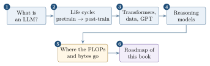
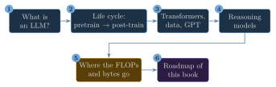
1.1 What is a large language model?
A language model assigns probabilities to sequences of text. Write a piece of text as a sequence of discrete units \(x_1, x_2, \dots, x_T\) called tokens (we will define tokens precisely in Chapter 8; for now think “words or pieces of words”). By the chain rule of probability, any distribution over sequences factorises as \[\begin{equation} p(x_1,\dots,x_T) \;=\; \prod_{t=1}^{T} p(x_t \mid x_1,\dots,x_{t-1}). \tag{1.1} \end{equation}\] An autoregressive language model learns the right-hand side directly: given a prefix, it outputs a probability distribution over the next token. A large language model (LLM) is such a model implemented as a deep neural network with a very large number of trainable parameters (hundreds of millions to hundreds of billions) and trained on a very large corpus (hundreds of billions to tens of trillions of tokens). Both meanings of “large” matter, and, as we will see in Section 1.12, they are tied together by the compute budget.
The training signal is almost embarrassingly simple: take real text, hide the next token, and penalise the model by the negative log-probability it assigned to the token that actually appeared. Summed over a corpus, this is the cross-entropy loss \[\begin{equation} \mathcal{L}(\theta) \;=\; -\frac{1}{N}\sum_{t} \log p_\theta(x_t \mid x_{<t}), \tag{1.2} \end{equation}\] which we implement in Chapter 20. That such a plain objective yields systems that translate, summarise, write code and solve competition mathematics is one of the central empirical surprises of the last decade. The explanation usually offered is that predicting the next token well across the whole distribution of human text requires modelling syntax, facts, styles, and (to some degree) the processes that generated the text, including step-by-step problem solving.
Modern LLMs are built on the transformer architecture (Section 1.4), whose key ingredient, self-attention, lets every position in a sequence draw information from every earlier position with a learned, data-dependent weighting. Because they generate new content, LLMs are also called generative AI. Figure 1.2 places them in the wider field.
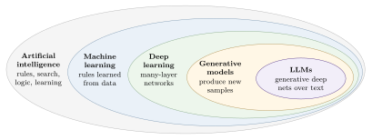
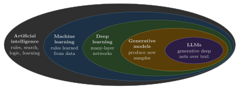
The distinction between the inner rings is worth making concrete. Consider building a spam filter. A classical machine-learning pipeline asks a human to engineer features (counts of words like “free” or “winner”, the fraction of upper-case characters, the number of links) and fits, say, a logistic regression on those features. A deep-learning pipeline instead feeds the raw text (as token ids) into a neural network and lets the early layers learn whatever features are useful. Both still need labelled examples of spam and non-spam; what changes is who designs the representation. LLMs push the idea further: during pretraining they need no labels at all, because the next token is the label. We will build exactly this spam filter on top of a pretrained GPT in Chapter 41.
Systems Lens: “Large” is a statement about bytes
Parameter count is the number every model card leads with, but for a systems engineer it is a proxy for three more operational quantities: (1) weight bytes, which set the minimum memory footprint and, during decoding, the minimum memory traffic per generated token; (2) FLOPs per token, roughly \(2N\) for a forward pass over a model with \(N\) parameters; and (3) optimiser state bytes during training, roughly \(16N\) with mixed-precision AdamW. A 7B-parameter model is 14 GB of bf16 weights, about 14 GFLOP per generated token, and about 112 GB of training state before a single activation is stored. Most of this book’s systems content is about managing those three numbers.
1.2 What LLMs are used for
Because nearly every knowledge task can be phrased as “read some text, write some text”, LLMs have an unusually wide application surface:
Generation and transformation: drafting prose and code, translation, rewriting for tone or audience, summarisation of long documents.
Understanding and classification: sentiment analysis, intent detection, spam and abuse filtering, routing tickets (Chapter 41 implements this).
Assistants and chat: multi-turn conversational agents that answer questions, follow instructions, and call tools (Chapters 42 and 48).
Knowledge work in specialised domains: search and question answering over legal, medical or scientific corpora, often combined with retrieval.
Reasoning-heavy tasks: competition mathematics, program synthesis, planning in agentic systems, where the reasoning methods of Part VII matter most.
Why build or adapt your own model rather than call a hosted API? Four reasons recur. Quality: models specialised for a domain (finance, medicine, code) frequently beat larger general models on in-domain tasks. Privacy and control: sensitive data need not leave the organisation, and the owner decides when the model changes. Cost and latency: a small model on local hardware, or even on a phone or laptop, can be cheaper and faster than a round trip to a large hosted model. Understanding: you cannot debug, optimise, or extend what you do not understand, which is the motivation for building everything from scratch in this book.
Napkin Math: API vs. self-hosting, first order
Suppose a workload needs \(10^9\) generated tokens per day from an 8B-parameter model. At roughly \(2N = 16\) GFLOP per token, that is \(1.6\times10^{19}\) FLOP/day. One H100 at a realistic 30–50% of its 989 TFLOP/s bf16 peak delivers \(2.6\)–\(4.3\times10^{19}\) FLOP/day, so on compute alone a single GPU suffices. But decoding is memory-bound (Section 1.12): at batch size 1 each token must stream all 16 GB of weights, capping a single sequence at about \(3.35\,\text{TB/s} / 16\,\text{GB} \approx 200\) tokens/s. Reaching \(10^9/86400 \approx 11{,}600\) tokens/s requires batching on the order of a hundred concurrent sequences. Whether that is achievable depends on KV-cache memory and on the serving engine, the subject of Part VI. The economics of self-hosting are therefore a batching problem more than a FLOPs problem.
1.3 The stages of building and using an LLM
1.3.1 Pretraining: learning from raw text
The first and by far the most expensive stage is pretraining. A randomly initialised network is trained with the next-token objective (1.2) on a huge corpus of raw, unlabelled text (web pages, books, encyclopaedias, code, scientific articles), usually after filtering and deduplication. Because the labels are derived from the data itself, this is called self-supervised learning. The result is a base or foundation model. A base model is a superb text completer: give it the beginning of a paragraph and it continues plausibly. It also shows in-context learning: shown a few input–output examples in the prompt (few-shot), or merely a description of the task (zero-shot), it can often perform a task it was never explicitly trained for. What it does not reliably do is follow instructions or hold a conversation; it continues text, and an instruction is just more text to continue.
Some pipelines distinguish a mid-training phase (continued pretraining on code, mathematics, long documents, or higher-quality data near the end of pretraining). We fold it into pretraining: the objective is the same and only the data mixture changes.
1.3.2 Post-training: fine-tuning and preference tuning
Fine-tuning continues training a pretrained model on a smaller, usually labelled, dataset. Two families matter in this book:
Classification fine-tuning: the data are (text, class label) pairs; the output layer is replaced by a small classification head (Chapter 41).
Instruction fine-tuning, also called supervised fine-tuning (SFT) or instruction tuning: the data are (instruction, desired response) pairs, and the model keeps its language-modelling head but learns to produce responses (Chapter 42).
Production assistants then apply preference tuning: the model is nudged towards responses that humans (or a model trained on human judgements) prefer. The classic recipe is reinforcement learning from human feedback (RLHF), which trains a reward model from human rankings and optimises the LLM against it with PPO; we study it in Chapter 61. Lighter-weight alternatives such as Direct Preference Optimization (DPO, Chapter 62) optimise the same kind of preference data without an explicit RL loop. Pretraining gives the model raw linguistic competence; SFT teaches it the format of being helpful; preference tuning shapes which of many acceptable responses it prefers (tone, safety, concision).
Even an instruction- and preference-tuned model is not yet a product. A chat application adds a system prompt, conversation-history management, tool calling, safety layers and a serving stack; we build a minimal chat interface in Chapter 48. Figure 1.3 summarises the life cycle together with its typical compute cost.
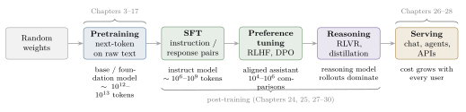
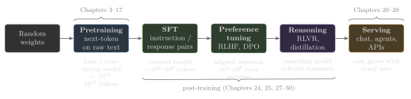
Key Idea: Post-training changes behaviour, not knowledge
A useful mental model: pretraining stores most of what the model knows; post-training mostly selects how that knowledge is expressed. This is why SFT on a few tens of thousands of good examples can turn a completer into an assistant, and why reasoning-focused RL on comparatively few problems can unlock long chains of thought that were latent in the base model.
1.4 The transformer architecture
The transformer was introduced in 2017 by Vaswani et al. (“Attention Is All You Need”) for machine translation. The original model has two halves. An encoder reads the entire source sentence and turns each token into a context-dependent vector; a decoder generates the target sentence one token at a time, attending both to the tokens it has already produced and to the encoder’s vectors. Both halves are stacks of identical layers whose central operation is self-attention: each position computes a weighted average of the representations of other positions, with weights that depend on the content of both. Self-attention is what lets a model resolve that “it” in “the trophy did not fit in the suitcase because it was too big” refers to the trophy, by learning which earlier tokens are relevant to each later one. We derive it carefully in Chapter 9.
Subsequent work split the architecture into three families (Figure 1.4):
Encoder-only models such as BERT are trained to reconstruct masked words using context from both sides. They excel at understanding tasks (classification, retrieval embeddings) but do not naturally generate text.
Decoder-only models such as the GPT family are trained to predict the next token using only the left context, enforced by a causal mask. They generate text naturally and, at scale, turned out to be good at understanding tasks too. Almost every modern LLM, including both models we build (GPT-2 and Qwen3), is decoder-only.
Encoder–decoder models such as T5 keep both halves and remain popular for sequence-to-sequence tasks like translation and speech recognition.
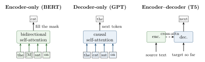
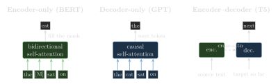
Systems Lens: Why decoder-only won, from a systems angle
Decoder-only models have one stack, one objective and one data format (a stream of tokens), so every token of every document is a training example: a sequence of length \(T\) yields \(T\) next-token predictions in a single forward pass thanks to the causal mask. The same weights and the same kernels serve pretraining, fine-tuning, and inference, and the causal structure makes the KV cache possible: keys and values of past tokens never change, so they can be stored and reused (Chapter 45). An encoder’s bidirectional attention would invalidate such a cache every time a token is appended. Simplicity of the training pipeline and cacheability at inference time are two underrated reasons for the dominance of the decoder-only design.
Zero-shot and few-shot.
Encoder–decoder and encoder-only models were typically fine-tuned per task. GPT-3 popularised a different mode of use: describe the task in the prompt (zero-shot), or prepend a handful of solved examples (few-shot), and let the model continue. Few-shot prompting costs prefill compute and KV-cache memory proportional to the length of the examples on every request, which is why prefix caching (Chapter 46) is valuable for workloads with shared few-shot prefixes.
1.5 Training data at scale
The capabilities of LLMs are inseparable from the scale of their training data. GPT-3, the 175B-parameter model behind early ChatGPT-era products, is a useful historical reference point because its data mixture was published (Table 1.1). Two details are instructive. First, the mixture is weighted: high-quality sources such as Wikipedia and books are sampled more often than their raw size would suggest, so the model sees them for several epochs while seeing most of the web data less than once. Second, the model was trained on 300 billion tokens, fewer than the roughly 500 billion available, a choice later work on compute-optimal scaling (Chapters 20 and 22) would revisit: the Chinchilla analysis suggests about 20 tokens per parameter, and current open models are trained far beyond that (Qwen3 and Llama-3-class models on tens of trillions of tokens) because extra training compute is repaid by cheaper inference with a smaller model.
| Source | Tokens (B) | Share of mix | Character |
|---|---|---|---|
| Common Crawl (filtered) | 410 | 60% | web pages, filtered for quality |
| WebText2 | 19 | 22% | pages linked from upvoted posts |
| Books1 | 12 | 8% | long-form prose |
| Books2 | 55 | 8% | long-form prose |
| Wikipedia | 3 | 3% | encyclopaedic |
| Total available / trained | \(\approx\)500 / 300 |
A token is not a word. With GPT-2’s byte-pair-encoding tokeniser, English prose averages roughly 0.75 words per token, and code or non-English text usually needs more tokens per word. Tokens are the unit in which every cost in this book is measured: training compute scales with tokens processed, context windows are measured in tokens, and serving is priced per token.
Napkin Math: How big is a pretraining corpus on disk?
A 15-trillion-token corpus, typical for a 2025-era open model, tokenised with a vocabulary of about 152k (too large for 16-bit ids) and stored as uint32 occupies \(15\times10^{12}\times 4 =
60\) TB. GPT-3’s 300B training tokens with a 50,257-entry vocabulary fit in uint16: \(600\) GB. At, say, 2 GB/s of aggregate read bandwidth per training node, streaming 60 TB once takes about 8.3 node-hours, negligible compared with the compute, provided the data pipeline is prepared offline (tokenised, sharded and shuffled) rather than tokenised on the fly (Chapters 8 and 21).
The cost of the compute itself is dominated by the model and token count. Using the standard estimate (derived in Chapter 20) that training costs about \(6ND\) FLOPs for \(N\) parameters and \(D\) tokens, GPT-3 required \(6 \times 175\times10^9 \times 300\times10^9 \approx 3.15\times10^{23}\) FLOPs. Section 1.12 turns that into GPU-days.
1.6 A closer look at GPT
GPT (“generative pretrained transformer”) models are decoder-only transformers trained with next-token prediction. Architecturally, GPT-3 is a scaled-up GPT-2, which is a scaled-up GPT-1: more layers, wider layers, more heads, longer context, more data. The decoder stack takes token ids, maps them to vectors, passes them through \(L\) identical transformer blocks, and projects the final vectors back to a score (logit) for every vocabulary entry.
Generation is autoregressive (Figure 1.5): the model predicts a distribution over the next token, one token is chosen (greedily or by sampling), appended to the input, and the process repeats. Every generated token therefore requires a full forward pass through the network, and the \(t\)-th token depends on all \(t-1\) before it. This sequential dependence is the single most important fact about LLM inference performance: it prevents parallelism across the output sequence and makes the per-token latency floor equal to the time to stream the model’s weights through the chip (Chapter 45).
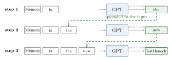
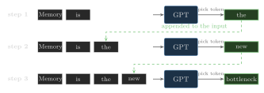
Although GPT was trained only to predict the next token, sufficiently large GPT models can translate, answer questions, and summarise without task-specific training. Capabilities that appear only at scale and were not targeted by the objective are often called emergent. The term is debated (some apparent emergence is an artefact of discontinuous metrics), but the practical point stands: a single pretrained model is a general substrate from which many tasks can be elicited, by prompting or by light fine-tuning.
1.7 From LLMs to reasoning models
We use “reasoning” in an engineering sense: an LLM reasons when it generates intermediate steps before committing to a final answer. A reasoning model is an LLM that has been improved, by prompting, decoding procedures or training, to produce such intermediate steps, usually because doing so increases accuracy on multi-step tasks such as mathematics, coding and logic puzzles. The intermediate steps may be visible, as in classic chain-of-thought (CoT) prompting, or wrapped in special delimiters such as <think>…</think> and hidden from the end user. Either way, the model spends tokens on thinking. Figure 1.6 contrasts the two behaviours on a small example.
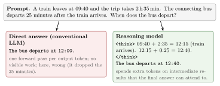
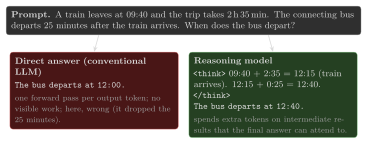
Why should writing things down help a next-token predictor? A transformer performs a bounded amount of computation per generated token: a fixed number of layers, each with a fixed width. Problems whose answer requires more sequential computation than one forward pass provides cannot be solved “in one go”, but they can be solved if the model is allowed to write intermediate results into its own context and read them back with attention. In this view, the generated tokens act as a scratchpad and a variable-length compute budget. It also tells us the price: reasoning is paid for in generated tokens, the most expensive tokens in the system because they are produced sequentially.
Pitfall: LLM reasoning is probabilistic
A theorem prover or a symbolic solver applies fixed rules and returns the same, guaranteed-sound derivation every time. An LLM generates its steps by sampling from learned token distributions. Its traces can look rigorous and still contain an invalid step, and two samples for the same prompt can disagree. Much of Part VII (verifiers, self-consistency, scoring, RL with verifiable rewards) exists to manage this randomness rather than to eliminate it. Whether and how such traces resemble human reasoning remains an open question; we treat “reasoning” and “thinking” purely as operational terms.
1.8 Three levers for improving reasoning
Reasoning models entered the mainstream with OpenAI’s o1 (September 2024), presented as models that “spend more time thinking” before they answer, and became broadly reproducible with DeepSeek-R1 (January 2025), whose open weights and technical report described how to train such a model. The techniques fall into three groups, all applied on top of a model that has already gone through pretraining and usually post-training (Figure 1.7):
Inference-time compute scaling (also called test-time scaling) improves answers without changing weights, by spending more computation per query: chain-of-thought prompting, sampling many answers and voting (self-consistency), scoring and refining answers, search. Chapters 57 and 58 implement these.
Reinforcement learning updates the weights so that the model is more likely to produce outputs that earn high reward. For reasoning, the reward is usually verifiable, for instance “the final answer matches the reference” or “the code passes the tests” (RL with verifiable rewards, RLVR). ?? sets up the problem, Chapter 60 derives policy gradients, and Chapters 63, 64 and 65 implement GRPO and the systems around it.
Distillation transfers reasoning behaviour from a strong teacher model to a smaller student, typically by supervised fine-tuning the student on reasoning traces generated by the teacher. In classical deep learning, distillation also matches the teacher’s output distribution (logits); in LLM practice, “distillation” often means SFT on teacher-generated text. Chapter 66 implements both variants.
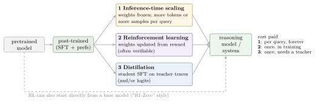
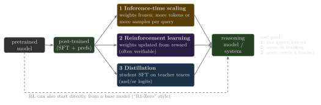
Deeper Dive: RL for reasoning vs. RLHF
Both RLHF and RL for reasoning use the same machinery: sample responses from the current policy, score them, update the policy towards higher-scoring responses. They differ in where the score comes from. In RLHF, the reward is a learned model of human preferences, which is subjective, can be gamed (“reward hacking”), and must be trained on human comparisons. In RLVR the reward is computed by a program: a math checker, a unit-test runner, a format validator. Programmatic rewards are cheap, objective and hard to fool on their own terms, but they exist only for tasks whose answers can be checked automatically. This is one reason reasoning models are strongest in mathematics and code.
Systems Lens: The three levers have different cost profiles
Inference-time scaling multiplies serving cost: self-consistency with 16 samples multiplies decode work by 16 (though the prompt’s KV cache can be shared, Chapter 57), and every query pays it. RL moves the cost into training, but the training loop is dominated by generation (rollouts), so an RL trainer is really an inference engine and a trainer glued together (Chapter 65). Distillation is the cheapest at serving time, since a small student serves fast, but requires a teacher and a large offline generation job to produce traces. Choosing among them is a systems trade-off between one-time and per-query cost.
1.9 Pattern matching versus logical reasoning
Pretraining teaches a model to reproduce the statistical regularities of its corpus. When asked “What is the capital of Germany?”, a model answers “Berlin” not by deduction but because the association is overwhelmingly strong in its training data. We call this pattern matching: completing text according to learned correlations. Much text has premise–conclusion structure, so pattern matching can look like inference.
Logical reasoning, by contrast, derives conclusions from premises by rules, tracks which statements depend on which, and notices contradictions. Consider the prompt:
Every metal is solid at room temperature. Mercury is a metal. Is mercury solid at room temperature?
In a closed-world reading (only the prompt’s premises count), the valid conclusion is “yes”. In an open-world reading that admits background knowledge, the conclusion contradicts the fact that mercury is a liquid at room temperature, so a careful reasoner should flag the inconsistency and reject or weaken the first premise (“most metals are solid…”). Figure 1.8 draws the dependency structure. A purely statistical model does not maintain such a structure explicitly; it predicts whichever continuation is most probable given its training distribution, which may or may not track the contradiction.
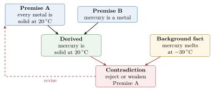
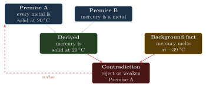
Rule-based expert systems that did maintain such structure were widely deployed in the 1980s and 1990s and survive in safety-critical niches. They lost ground because the rules must be hand-written and the systems are brittle outside their rule base. Neural models learn their “rules” from data and are flexible, at the price of guarantees.
1.10 Simulating reasoning without explicit rules
Ask a strong conventional (non-reasoning) chat model the mercury question and it will very likely answer correctly, explaining that mercury is the exception. Does that mean it performed logical inference? Not necessarily. Text of the form “all X are Y, except …” and specific facts about mercury are abundant in training data, so the correct continuation is also a high-probability continuation. The model simulates reasoning by pattern matching over a vast corpus of reasoning-shaped text. This works remarkably well at scale, and it degrades in predictable situations: when the problem is novel (no close analogue in training data), when it requires many dependent steps (each with some error rate, so errors compound), and when the correct answer runs against a strong surface association.
Seen this way, LLMs sit on a spectrum. Even before dedicated reasoning models, LLMs could produce intermediate steps when prompted; reasoning models are LLMs in which that behaviour has been made more reliable and more extensive through the levers of Section 1.8. None of them executes an internal rule engine. They improve the odds that the generated trace is correct and that the final answer follows from it.
Napkin Math: Why long chains are fragile
If each step of a derivation is independently correct with probability \(q\), a \(k\)-step chain is fully correct with probability \(q^k\). With \(q=0.98\), a 10-step chain succeeds \(0.98^{10}\approx 82\%\) of the time and a 50-step chain only \(0.98^{50}\approx 36\%\). Sampling \(n\) independent chains and taking a majority vote (Chapter 57) or training the model to raise \(q\) (Chapter 63) are the two complementary remedies, and both cost compute: the first at every query, the second once.
1.11 Why reasoning models, and why from scratch?
Since early 2025, improving reasoning has been among the most active areas in LLM research, and the major model providers have converged on models that decide how long to think: short answers for simple requests, extended reasoning for hard ones. That design choice matters because reasoning is not free and not always useful (Table 1.2). For summarisation, translation, or factual lookup, extended thinking adds latency and cost and can even hurt, as models “overthink” simple problems. For mathematics, coding, planning and multi-step analysis it can be decisive.
| Reasoning helps | Reasoning is wasteful | |
|---|---|---|
| Task type | multi-step math, proofs, code generation and debugging, puzzles, planning, tool selection in agents | summarisation, translation, retrieval-style QA, short classification, chit-chat |
| Cost | 10–100\(\times\) more output tokens; higher latency; more KV memory per request | n/a |
| Failure modes | verbose, can overthink easy inputs | errors on multi-step problems |
Napkin Math: What a thinking budget costs in serving
Take Qwen3-8B in bf16 on one H100. Its KV cache needs \(2\times36\times8\times128\times2 = 147{,}456\) bytes per token (Table 1.3). A direct 200-token answer to a 300-token prompt occupies about 70 MiB of KV cache; a 4,000-token reasoning trace pushes that to about 600 MiB, reducing the number of concurrent sequences that fit in the GPU’s spare memory by roughly \(8.5\times\). At batch size 1 the memory-bound decode floor is \(16.4\,\text{GB}/3.35\,\text{TB/s} \approx 4.9\) ms per token, so the trace alone costs at least 20 seconds of wall-clock time versus 1 second for the direct answer. Reasoning models are a stress test for every serving optimisation in Part VI.
Why build all this from scratch, when production frameworks exist? Because the methods are young and changing quickly, and the only durable understanding comes from implementing them. Reasoning-model training recipes in particular mix ideas from inference (sampling, batching, KV caches), RL (policy gradients, baselines, KL control), and distributed systems (rollout workers, weight synchronisation). Implementing the pieces makes each of these visible, and makes the design space of production systems such as vLLM, SGLang, veRL and OpenRLHF legible.
1.12 The systems view: where the FLOPs and bytes go
This section is the first installment of a cost model we refine throughout the book. It needs only three facts, each derived properly later.
Forward FLOPs per token \(\approx 2N\) for a dense model with \(N\) (non-embedding) parameters: every weight participates in one multiply and one add. Attention adds a term proportional to context length (Chapter 10).
Training FLOPs \(\approx 6ND\) for \(D\) training tokens: the backward pass costs about twice the forward pass (Chapters 2 and 20).
Memory: weights take \(N\times\)(bytes per parameter); mixed-precision AdamW training state takes \(\approx 16N\) bytes; the KV cache takes \(2\,L\,H_{kv}\,d_h\) values per token of context (Chapter 45 and ??).
| Model | Params | GFLOP/token | KV/token | KV @ 4k ctx | Decode tok/s, B=1 |
| (unique) | (fwd, 4k ctx) | (bf16) | (bf16, 1 seq) | (H100 bound) | |
| Qwen3-0.6B | 596M | 2.1 | 112 KiB | 448 MiB | 2,016 |
| Qwen3-1.7B | 1.72B | 4.4 | 112 KiB | 448 MiB | 857 |
| Qwen3-4B | 4.02B | 10.5 | 144 KiB | 576 MiB | 387 |
| Qwen3-8B | 8.19B | 17.6 | 144 KiB | 576 MiB | 197 |
| Qwen3-14B | 14.8B | 31.3 | 160 KiB | 640 MiB | 111 |
| Qwen3-32B | 32.8B | 72.6 | 256 KiB | 1,024 MiB | 50 |
Table 1.3 applies these formulas to the model family used in Part VII. Two features stand out. First, KV-cache bytes per token are small and nearly constant across sizes (thanks to grouped-query attention, Chapter 11), so at long contexts the cache, not the weights, limits how many requests fit in memory. Second, single-sequence decoding speed is set by bandwidth: the smallest model streams its 1.2 GB of weights plus 448 MiB of KV cache about 2,000 times per second (the weights alone would allow about 2,800), and nothing short of batching, quantisation (Chapter 48) or speculative decoding can beat that bound.
Napkin Math: GPT-3 in GPU-days
\(C = 6ND = 6\times175\times10^9\times300\times10^9 = 3.15\times10^{23}\) FLOPs. One H100 at 40% model FLOPs utilisation (MFU) sustains \(0.4\times989\times10^{12} \approx 4\times10^{14}\) FLOP/s, so training takes \(3.15\times10^{23}/(3.96\times10^{14}) \approx 8.0\times10^8\) GPU-seconds \(\approx 221{,}000\) GPU-hours: nine days on 1,024 H100s. The same job on A100s (312 TFLOP/s) needs about 700,000 GPU-hours. The original 2020 run used V100s, roughly an order of magnitude slower per chip than an H100 for this workload.
To see how cost is distributed across the life cycle, Figure 1.9 applies the same formulas to a hypothetical 8B-parameter model with illustrative but realistic budgets: 15T pretraining tokens; 1B SFT tokens; an RL phase with \(10^5\) prompts \(\times\) 8 rollouts \(\times\) 4,000 tokens, counting generation (\(2N\) per token) and training (\(6N\) per token); and serving \(10^9\) tokens per day for a year.
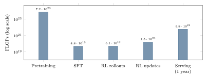
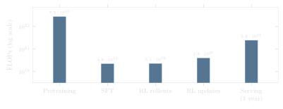
Systems Lens: FLOPs are not time
Figure 1.9 counts FLOPs, but stages differ wildly in how efficiently they turn FLOPs into progress. Pretraining runs large dense matrix multiplications and can sustain 40–50% MFU on well-tuned clusters. Decoding (serving, and RL rollouts) is dominated by matrix–vector products whose arithmetic intensity is near 1 FLOP/byte at batch 1, versus the \(\sim\)295 FLOP/byte an H100 needs to be compute-bound (Chapter 3); without large batches, utilisation can fall to a few percent. That is why RL rollouts often take the majority of wall-clock time in reasoning training despite being a small FLOP fraction, and why serving engines obsess over batching.
1.12.1 Anatomy of a single request
It is worth following one chat request through a serving system now, because the vocabulary returns in every later part of the book (Figure 1.10). The text is tokenised on the CPU. The prompt’s tokens are then processed in a single parallel forward pass, the prefill, which computes and stores the keys and values of every prompt token in the KV cache and produces the logits for the first output token. Prefill is a sequence of large matrix–matrix products and is compute-bound; its duration sets the time to first token (TTFT). After that, the engine enters the decode loop: each iteration feeds only the newest token, attends to the cached keys and values, samples one token, appends its own key and value to the cache, and streams the token back to the client after detokenisation. Decode iterations are matrix–vector products, memory-bound, and their duration sets the time per output token (TPOT), also called inter-token latency. A reasoning model simply has a very long decode phase, much of it inside <think> tags.
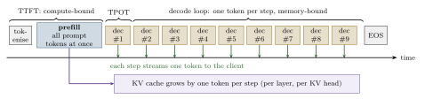
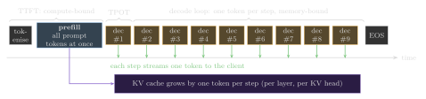
Table 1.4 condenses the resulting picture. It is the most important table in this chapter: nearly every optimisation in the book is an attack on one cell.
| Workload | Dominant operation | Usual bottleneck | Main remedies (chapter) |
|---|---|---|---|
| Pretraining | large GEMMs, fwd + bwd | compute; then interconnect | mixed precision, kernel fusion, FlashAttention, parallelism (20, 24) |
| Fine-tuning | same, smaller scale | memory capacity (optimiser state) | LoRA and QLoRA, ZeRO and FSDP, checkpointing (42, 24) |
| Prefill | GEMMs over prompt | compute | FlashAttention, chunked prefill, prefix caching (9, 46) |
| Decode | GEMVs + attention over cache | memory bandwidth; KV capacity | batching, paged KV, GQA, quantisation, speculative decoding (46, ??, 48) |
| RL rollouts | decode at scale | bandwidth; long-tail lengths | inference engines inside the trainer, async RL (65) |
| Evaluation | batched decode + checking | bandwidth; verifier CPU time | batching, caching, sandboxed parallel verifiers (56) |
Deeper Dive: Scaling laws in one paragraph
Empirically, pretraining loss falls as a smooth power law in parameters, data and compute (Kaplan et al., 2020). Hoffmann et al. (2022, “Chinchilla”) refit these laws and found that, for a fixed compute budget \(C\approx6ND\), loss is minimised when parameters and tokens grow in roughly equal proportion, at about 20 tokens per parameter. A 70B model is then “compute-optimal” at about 1.4T tokens. Production models deliberately overshoot (\(D/N\) in the hundreds or thousands) because a smaller model trained longer is cheaper to serve, and lifetime serving cost dominates (Figure 1.9). Chapter 22 derives the compute-optimal allocation and fits these laws to our own runs.
Deeper Dive: Reading the research: Kaplan et al. (2020), “Scaling Laws for Neural Language Models”
The cost model, in our notation. The paper’s Table 1 counts, for a decoder with \(L\) layers, width \(d\), attention width \(d_{\text{attn}}=H d_h\) and MLP width \(d_{\text{ff}}\), the non-embedding parameters \(N = 2\,d\,L\,(2d_{\text{attn}} + d_{\text{ff}})\), which is \(12\,L\,d^2\) for the GPT shape \(d_{\text{attn}}=d\), \(d_{\text{ff}}=4d\), and the forward cost per token \[\begin{equation} C_{\text{forward}} \;=\; 2N + 2\,L\,n_{\text{ctx}}\,d_{\text{attn}}, \tag{1.3} \end{equation}\] from which training costs \(C\approx 6N\) FLOPs per token, \(C\approx6ND\) in all. The second term looks like half of what Section 1.12 charges for attention (\(4\,L\,d_{\text{attn}}\) per key attended, for \(QK^\top\) and \(PV\)). It is not a different count but an average: in a causal sequence of \(n_{\text{ctx}}\) tokens a token attends to \(n_{\text{ctx}}/2\) keys on average. Embeddings and the output head are left out of \(N\), biases and norm gains too.
What our code reproduces. kaplan_forward_flops in Lab 1 implements (1.3) and the lab’s test checks that it equals our own forward_flops_per_token(cfg, n_ctx / 2) minus the LM-head matmul, exactly, for GPT-2 and Qwen3. The paper then argues that the context term is negligible when \(d > n_{\text{ctx}}/12\), which follows from the ratio \(L\,n_{\text{ctx}}\,d_{\text{attn}}/N = n_{\text{ctx}}/(12d)\) for the GPT shape. The lab gives the fraction of \(C_{\text{forward}}\) in the context term: 10% for GPT-2 small at \(n_{\text{ctx}}=1{,}024\), the regime of the paper; 35% for Qwen3-0.6B at 4,096 tokens (its attention is twice as wide as its residual stream, so the GPT-shape criterion is optimistic) and 81% at 32,768; 8% and 41% for Qwen3-8B at the same two lengths. The “\(6N\)” rule is an excellent model of 2020-era pretraining and a poor one of long-context training. We do not reproduce the paper’s loss exponents (\(\alpha_N\approx0.076\), \(\alpha_D\approx0.095\), \(\alpha_C\approx0.050\)) or its allocation \(N_{\text{opt}}\propto C^{0.73}\) here: that needs training runs, which Chapter 22 and Chapter 29 make.
What the evaluation leaves out. The fits count FLOPs, never time, memory or serving cost, so they cannot see that a smaller model trained longer is cheaper to deploy. Every run used one learning-rate schedule length regardless of its token budget; Hoffmann et al. (2022) showed that this biased the allocation towards large models, and their refit moved the exponent from 0.73 to about 0.5. Excluding embedding parameters changes the fitted exponents at small scale (Pearce and Song, 2024). The data are one distribution (WebText2) seen for at most one epoch, the largest model has about 1.5B parameters, and the context term is dropped. Each omission became a later paper.
1.12.2 The hardware zoo
Most LLM work today runs on NVIDIA GPUs (A100, H100/H200, B200), whose programming model, CUDA, is the one we program in ?? and, one level up, in Triton (Appendix A); ?? takes the GPU and its competitors apart. Google’s TPUs organise compute as large systolic matrix units fed by high-bandwidth memory and connect chips in a torus with dedicated inter-chip links. A third family of dataflow or near-memory architectures, including Tenstorrent’s grids of RISC-V-controlled Tensix cores, Cerebras’s wafer-scale engine and Groq’s deterministic LPU, trades the GPU’s cache hierarchy for explicitly scheduled on-chip SRAM and data movement. The vocabulary of this book (FLOPs, bytes, arithmetic intensity, bandwidth, interconnect, overlap) applies unchanged to all of them; only the constants and the knobs differ (Appendix B). Figure 1.11 sketches the common abstraction.
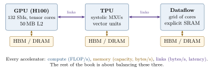
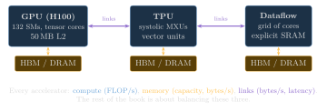
1.13 A roadmap for this book
The book follows two arcs and wraps them in a systems layer. The first arc builds a GPT-style model and trains it: data and tokenisation, attention, the full architecture, pretraining, and fine-tuning for classification and for following instructions. The second starts from a pretrained (and post-trained) model and turns it into a reasoning model: a text-generation pipeline, an evaluation harness with a math verifier, inference-time techniques (chain of thought, sampling, self-consistency, self-refinement), and training techniques (policy gradients, RLHF, DPO, GRPO and distillation). The systems layer runs through every chapter as Systems Lens and Napkin Math boxes, and one part of it goes all the way down, from a Python program to C++, CUDA, compilers and the memory system. Our goal throughout is not only to explain how today’s systems work but to leave you able to read, reproduce and extend the research that will replace them.
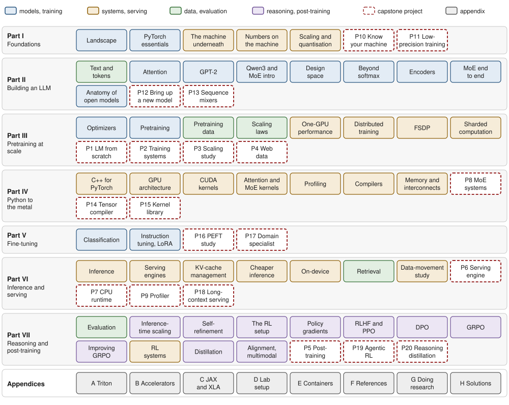
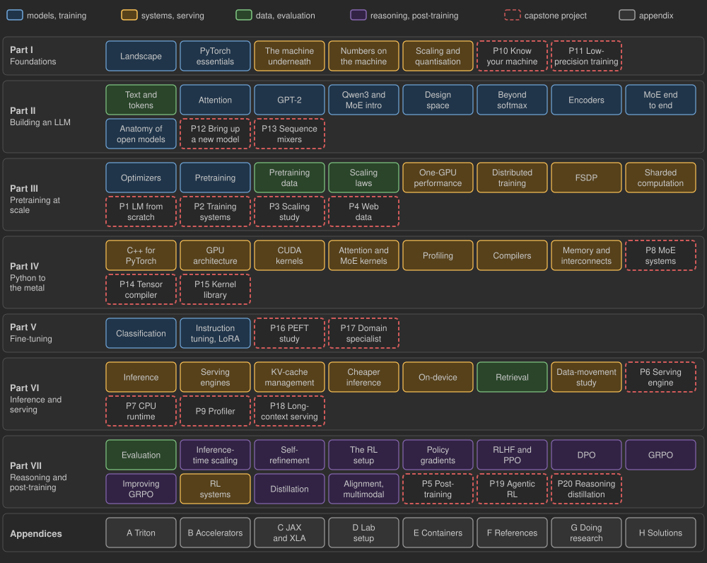
Figure 1.12 shows the seven parts. Every part ends with research-grade capstone projects that use only the material of that part and the parts before it; each has a specification framed as research questions, milestones with automated acceptance tests, baselines, a compute budget sized for two A100-40GB GPUs connected over PCIe, and a reference solution.
Part I, Foundations. This chapter; PyTorch from tensors to multi-GPU training (Chapter 2); the machine underneath it, with the roofline as the book’s first performance model and the discipline of measuring it (Chapter 3); how numbers are represented, rounded and accumulated on the machine, from fp32 to fp4 and integer formats (Chapter 4); and how scales, quantisation grids and mixed-precision recipes make the narrow formats usable (Chapter 5). Capstones: characterising your own machine (Chapter 6) and a low-precision training study (Chapter 7).
Part II, Building an LLM. Text and tokenisation (Chapter 8), attention (Chapter 9), GPT-2 (Chapter 10), a modern Qwen3-style model (Chapter 11), the architecture design space (Chapter 12), alternatives to softmax attention (Chapter 13), encoders and encoder–decoders (Chapter 14), mixture-of-experts models end to end (??), and the anatomy of today’s open models down to their checkpoint files (??). Capstones: bringing up a new open model against reference logits (??) and sequence mixers at long context (??).
Part III, Pretraining at scale. Optimisers (Chapter 19), the pretraining loop (Chapter 20), pretraining data (Chapter 21), scaling laws (Chapter 22), single-GPU performance engineering (Chapter 23), distributed training (Chapter 24), sharded data parallelism (Chapter 25) and a calculus for sharded computation (??). Capstones: a language model from scratch (Chapter 27), training systems on PCIe GPUs (Chapter 28), a budgeted scaling study (Chapter 29) and a web-data pipeline (Chapter 30).
Part IV, From Python to the metal. C++ for PyTorch (??), GPU and accelerator architecture (??), CUDA kernels from first principles (??), attention and mixture-of-experts kernels (??), the profiling toolchain (??), ML compilers (??), and memory, data movement and interconnects (??). Capstones: mixture-of-experts systems (??), a tiny tensor compiler (??) and a kernel library measured against vendor libraries (??).
Part V, Fine-tuning. Classification (Chapter 41) and instruction tuning with LoRA and its relatives (Chapter 42). Capstones: a parameter-efficient fine-tuning study (??) and a domain specialist built end to end (??).
Part VI, Inference and serving. How one request is generated (Chapter 45), how a server batches thousands (Chapter 46), how the KV cache is allocated, shared, evicted and moved (??), how to make each token cheaper (Chapter 48), inference on CPUs and devices (??), retrieval and compound systems (??), and a measured study of data movement in a long-running multi-stream reasoning workload (??). Capstones: a serving engine (??), a CPU runtime (??), a profiler (??) and long-context multi-agent serving (??).
Part VII, Reasoning and post-training. Evaluation (Chapter 56), inference-time scaling (Chapter 57), self-refinement (Chapter 58), the reinforcement-learning setup for LLMs (??), policy gradients (Chapter 60), RLHF with PPO (Chapter 61), DPO (Chapter 62), GRPO and its descendants (Chapters 63 and 64), RL training systems (Chapter 65), distillation (Chapter 66) and alignment and multimodality (Chapter 67). Capstones: post-training a reasoning model (Chapter 68), agentic RL with tools (??) and reasoning distillation under a budget (??).
The appendices cover Triton (Appendix A), accelerators beyond the GPU (Appendix B), JAX and XLA (Appendix C), the lab setup (Appendix D), containerising an ML project (??), the references (Appendix F), how to follow, read, reproduce and do research in LLM systems (??), and worked solutions to the exercises (Appendix H).
How to read this book.
The chapters are written to be read in order, but there are shorter paths. Four of them cover the readers we have in mind; each ends at capstones that test it.
Systems researcher. Part I, then Chapter 6; the Systems Lens boxes of Part II; Chapters 23, 24 and 25 and ??; all of Part IV; Chapters 45 and 46 and ?? and ??; Chapter 65; appendices Appendices B and C and ??. Capstones: Chapter 28 and ??, ?? and ??.
Inference engineer. Chapters 2, 3, 4 and 5; Chapters 9 and 11 and ?? and ??; ??, ??, ?? and ??; all of Part VI; then Chapter 57 for the serving cost of reasoning. Capstones: ??, ?? and ??.
Training engineer. Part I; Chapters 10 and 11 and ??; all of Part III; ?? and ??; Chapter 42. Capstones: Chapters 27, 28, 29 and 7.
Post-training and RL researcher. Chapters 1, 2 and 3; Chapters 10 and 11; Chapter 42; Chapters 45 and 46; then Part VII in order, starting with Chapter 56 and ??. Capstones: Chapter 68 and ?? and ??.
A reader who learns best by building can start from a capstone: each project guide lists, task by task, the chapters and labs that teach what the project needs.
Labs and research sections.
Each chapter closes with a lab in code/labs/. A lab has a starter.py with TODOs, a reference solution.py, and tests that run on a laptop CPU in seconds using tiny model configurations; most labs also ship a run.py or bench.py meant for a real GPU and real checkpoints. Tests are graded with pytest (Appendix D). The shared library llmsys contains the reusable pieces (model definitions, KV caches, sampling, training loops) built up over the first chapters. Every measured number in the book is labelled with the machine it was measured on; ours is a workstation with two A100-40GB GPUs connected over PCIe, without NVLink.
Every chapter also ends, before its summary, with a Research frontier section: the open problems, the handful of papers that define the area and what each changed, the assumptions that new hardware or models are likely to break, and the axes along which new papers vary, so that you can place a new paper in a minute. Each chapter also works through one landmark paper in a Reading the research box: its cost model in our notation, which of its numbers our lab code reproduces and how closely, and what its evaluation leaves out. Section 1.14 does this for the field as a whole.
1.14 Research frontier
Every later chapter closes with the frontier of its own topic. Here we take the field as a whole: where LLM systems research is moving, the works that defined it, the assumptions most likely to fail next, and a procedure for placing a new paper on the map in a minute.
1.14.1 Where the field is moving
Reasoning and test-time compute. Reasoning models move cost from training into generated tokens (Section 1.8). The open problems are allocation (how to split a budget between a larger model and more thinking per query; Snell et al., 2024), verification beyond domains with programmatic checkers, and serving: a 10,000-token trace is a long decode that holds KV cache for seconds to minutes, which turns KV-cache capacity, not FLOPs, into the binding constraint (Chapter 57 and ?? and ??).
Hybrid and sparse architectures. Fine-grained mixture-of-experts models (DeepSeek-AI, 2024, “V3”) decouple parameters from FLOPs per token; state-space and linear-attention layers mixed with a few attention layers (Gu and Dao, 2023; Lieber et al., 2024) bound the per-token state; trained sparse attention (Yuan et al., 2025) skips most of the cache. None has a settled scaling law, and each changes the cost model of Section 1.12: active and total parameters differ, KV bytes stop growing linearly with context, and the kernels become irregular (??, Chapter 13 and ??).
Low precision. Training moved from fp32 to bf16 and, at the frontier, to fp8 with fine-grained scaling (DeepSeek-AI, 2024, “V3”); block-scaled microscaling formats (Rouhani et al., 2023) push to 6 and 4 bits. Precision is now a scaling-law variable in its own right (Kumar et al., 2024), and the open questions are where each format is safe (weights, activations, gradients, optimiser state, KV cache) and how to know before a long run diverges (Chapters 4, 5 and 7).
Disaggregated and memory-centric serving. Prefill is compute-bound and decode is bandwidth-bound (Table 1.4); running them on the same GPUs makes each slow the other. Splitting them across machines (Patel et al., 2024; Zhong et al., 2024) and treating the KV cache as a distributed store (Qin et al., 2024) trade interference for data movement, so the interconnect becomes the bottleneck to study (Chapter 46 and ?? and ??).
RL systems. An RL step for reasoning is mostly generation: an inference engine and a trainer share the GPUs and exchange weights every step (Sheng et al., 2025). Open problems are the long tail of rollout lengths, how stale (off-policy) rollouts may be before learning suffers, and how to move weights between trainer and generator cheaply (?? and Chapter 65).
Hardware co-design. Models are now designed around the hardware they will run on and the reverse: DeepSeek-V3’s latent attention, fp8 recipe and communication-hiding pipeline were chosen around the interconnect limits of its H800 cluster, and its authors spell out what they want from the next chips (Zhao et al., 2025). At the other extreme, training across poorly connected sites (Douillard et al., 2023) asks how little communication training needs (?? and ?? and Appendix B).
1.14.2 The works that defined the field
- Vaswani et al. (2017), “Attention Is All You Need”: the transformer, a model made almost entirely of matrix multiplications, which is why GPUs and TPUs could scale it.
- Kaplan et al. (2020): loss is a smooth power law in \(N\), \(D\) and \(C\), and \(C\approx6ND\); scale became something to plan rather than to hope for.
- Hoffmann et al. (2022), “Chinchilla”: the compute-optimal allocation is about 20 tokens per parameter, and most models of the time were undertrained.
- Dao et al. (2022), “FlashAttention”: an exact algorithm restructured around the memory hierarchy is several times faster; IO-awareness became the default way to design a kernel.
- Pope et al. (2023), “Efficiently Scaling Transformer Inference”: inference cost as a function of batch, sharding layout and memory bandwidth, the template for every serving cost model.
- Kwon et al. (2023), “PagedAttention” (vLLM): KV-cache memory managed like virtual memory, which made large-batch serving practical and created the open serving-engine ecosystem.
- Snell et al. (2024): test-time compute can substitute for parameters, and the optimal amount depends on the difficulty of the query.
- DeepSeek-AI (2024), “DeepSeek-V3”: a frontier model co-designed with its cluster (MLA, fine-grained MoE, fp8 training, overlapped expert communication), documented in enough detail to reproduce the systems choices.
- DeepSeek-AI (2025), “DeepSeek-R1”: reinforcement learning with verifiable rewards on a strong base model yields long chain-of-thought reasoning, with open weights and a recipe.
- Zhong et al. (2024), “DistServe”: optimise prefill and decode for their own latency targets on separate hardware, measured as goodput; disaggregation entered production serving.
1.14.3 Assumptions that are likely to break
- “Training compute is \(6ND\).” It omits the context term (the box on Kaplan et al. shows it reaching 81% of the forward cost at 32k tokens for a small model), counts total rather than active parameters for MoE, and ignores generation, which dominates RL.
- “Pretraining dominates compute.” Serving and RL rollouts already exceed post-training (Figure 1.9), and reasoning models multiply serving tokens.
- “Decode is memory-bound, prefill compute-bound.” Large decode batches, MoE (each expert sees a fraction of the batch) and sparse attention move both operations along the roofline, and the ridge point moves between chip generations: in bf16 from 153 FLOP/byte on an A100-80GB SXM to 295 on an H100, because peak FLOP/s grew \(3.2\times\) while bandwidth grew \(1.6\times\), and back down to about 206 on the H200, which kept the H100’s compute and added bandwidth. Counting the lower-precision tensor cores, the ridge climbs steeply: about 562 FLOP/byte in fp8 and 1,125 in fp4 on a B200 (Chapter 3).
- “bf16 is the working precision.” fp8 training and 4-bit inference are in production; formats are becoming per-tensor design decisions (Chapters 4 and 5).
- “GPUs in a job are connected by a fast fabric.” Boxes like ours (PCIe only), multi-site training and disaggregated serving make the slowest link the design point.
1.14.4 How to recognise the next variant
Most systems papers are a point in a small space. Place a new one by answering six questions, which Table 1.5 applies to papers from this section and later chapters:
- Stage: pretraining, post-training, inference or RL (which mixes the last two)?
- Resource attacked: FLOPs, HBM bandwidth, HBM capacity, interconnect, host CPU, or latency and launch overhead? Our three-line cost model says which one binds.
- Mechanism: do less work (sparsity, early exit), move fewer bytes (quantisation, compression, fusion), reuse (batching, caching, sharing), overlap (pipelining, asynchrony), re-partition (sharding, disaggregation), or trade one resource for another (recompute versus store)?
- Exactness: does the output stay bit-identical, equal in distribution, or does the model change and need a quality evaluation?
- Hardware ratio assumed: which ratio (FLOP/s per byte/s, capacity per bandwidth, interconnect per HBM bandwidth) makes the idea pay off, and does it hold on your machine?
- Evaluation: what is held fixed (model, quality metric, hardware, baseline), and at what scale?
| Work | Stage | Resource attacked | Mechanism | Exactness |
|---|---|---|---|---|
| FlashAttention | training, inference | HBM bytes | fusion, tiling in SRAM | exact |
| PagedAttention | inference | HBM capacity | paged allocation, sharing | exact |
| Speculative decoding | inference | sequential decode steps | spend FLOPs to save weight reads | same distribution |
| GPTQ, AWQ | inference | HBM bytes and capacity | quantisation | approximate |
| DistServe | inference | prefill–decode interference | disaggregation | exact |
| ZeRO / FSDP | training | HBM capacity | sharding, communication | exact |
| GRPO | RL | HBM capacity, compute | no critic: group baseline | different algorithm |
| DeepSeek-V3 fp8 | training | FLOPs, HBM bytes | low precision with fine scaling | approximate |
Two questions finish the placement: what does the paper’s cost model predict on your hardware, and which of its numbers could you reproduce in a day? ?? turns these questions into a working method for reading, reproducing and extending papers.
1.15 Summary
An LLM is a deep neural network, almost always a decoder-only transformer, trained to predict the next token on a massive text corpus; “large” refers to both parameter count and data size.
Building an LLM proceeds through pretraining (self-supervised, by far the most compute), then post-training: classification or instruction fine-tuning and preference tuning. A chat product adds orchestration on top.
The transformer’s self-attention lets each position weigh the relevance of earlier positions. Decoder-only models generate autoregressively, one forward pass per token, which makes decoding inherently sequential and memory-bound.
Reasoning models generate intermediate steps before the answer. They are improved by inference-time scaling (no weight changes, per-query cost), reinforcement learning (often with verifiable rewards), and distillation from stronger teachers.
LLMs simulate reasoning through learned patterns rather than explicit rules; this is powerful at scale but fragile for novel, long, or counter-intuitive problems.
A three-line cost model (\(2N\) FLOPs/token forward, \(6ND\) training FLOPs, \(16N\) bytes of training state plus a per-token KV cache) is enough to estimate most budgets to within a small factor. Its attention term, which Kaplan et al. (2020) could drop at 1k tokens, cannot be dropped at long context.
The book has seven parts, each closed by capstone projects that use only that part and earlier ones; four reading paths serve systems researchers, inference engineers, training engineers and post-training researchers.
The frontier of the field is set by reasoning and test-time compute, hybrid and sparse architectures, low precision, disaggregated serving, RL systems and hardware co-design. A new paper is placed by its stage, the resource it attacks, its mechanism, its exactness, the hardware ratio it assumes and what its evaluation holds fixed.
1.16 Exercises
Exercise 1.1 (Chain rule).
Show that any joint distribution over length-\(T\) token sequences can be written as (1.1). Then explain why a model trained on (1.2) with a causal mask produces \(T\) training signals from one sequence of length \(T\), whereas a masked-language model that masks 15% of tokens produces only about \(0.15\,T\).
Exercise 1.2 (Perplexity intuition).
A model achieves an average cross-entropy of 2.0 nats per token on held-out text. What is its perplexity? Interpret the number as an “effective branching factor”. What loss would a model that predicts uniformly over a 50,257-token vocabulary have?
Exercise 1.3 (Weighted mixtures).
Using Table 1.1, compute how many epochs GPT-3 made over Wikipedia and over Common Crawl during its 300B-token run. Why might a practitioner deliberately repeat small, high-quality sources?
Exercise 1.4 (Your own compute budget).
You have 64 H100s for 30 days and expect 35% MFU. Using \(C=6ND\) and the Chinchilla heuristic \(D\approx20N\), what model size and token count are compute-optimal? If you instead plan to serve the model heavily, argue whether to choose a smaller \(N\) and larger \(D\).
Exercise 1.5 (Memory-bound decoding).
Derive the batch-1 decode bound in Table 1.3 for Qwen3-4B at a 4k context by hand. Then compute the bound for the same model with int4 weights (0.5 bytes/parameter) and a bf16 KV cache. Which term now dominates the bytes moved per step?
Exercise 1.6 (Critical batch size).
For a decode step of a dense model with \(N\) parameters stored in \(b\) bytes each, ignoring the KV cache, show that the step becomes compute-bound when the batch exceeds approximately \(B^\star = b\cdot \text{FLOP/s}_{\text{peak}} / (2\cdot\text{bytes/s}_{\text{peak}})\). Evaluate \(B^\star\) for an H100 in bf16 and compare with the lab’s numerical result. Why does a long context increase the effective \(B^\star\)?
Exercise 1.7 (Reasoning tokens and concurrency).
A server has 40 GB of HBM free for KV cache and serves Qwen3-8B. Requests have 500-token prompts. How many concurrent requests fit if responses average 300 tokens? If they average 6,000 tokens of thinking? Express the answer as the throughput penalty of turning on thinking, assuming decode is memory-bound and throughput scales with batch size.
Exercise 1.8 (Error compounding).
Under the independent-step model of Section 1.10, suppose a problem needs 30 steps and each is right with probability 0.97. Compute the single-chain success rate. Assuming chains are independent and wrong answers are spread over many distinct values, estimate how many samples are needed for a majority vote to be right with probability above 0.9. Discuss why the independence assumption is optimistic.
Exercise 1.9 (Pattern matching probe).
Design three prompts that separate pattern matching from logical reasoning: one closed-world syllogism with a false premise, one novel puzzle unlikely to appear in training data, and one where the answer contradicts a strong surface association. Predict how a base model, an instruction-tuned model and a reasoning model would differ, and how you would score them automatically.
Exercise 1.10 (Lever selection).
A company must improve accuracy on an internal code-review task. It has a mid-sized open model, a GPU budget for one week of training, and strict latency targets in production. Rank inference-time scaling, RL, and distillation for this setting and justify the ranking using the cost profiles of Section 1.8.
Exercise 1.11 (Kaplan’s accounting at long context).
Extend the napkin calculator to the setting of Kaplan et al. (2020). (a) Using kaplan_forward_flops, find for GPT-2 small, Qwen3-0.6B and Qwen3-8B the context length at which the context term of (1.3) equals \(2N\). (b) Derive the general condition and explain why the paper’s rule \(d > n_{\text{ctx}}/12\) is too optimistic for Qwen3. (c) A team plans to continue pretraining Qwen3-8B on 100B tokens at a 32k context and budgets \(6ND\). By what factor is the budget wrong, and in which direction? (d) Place Kaplan et al. and Hoffmann et al. on the six axes of Section 1.14.
Exercise 1.12 (Predict, then measure: the reference box).
Predict with report.py --hw A100-40GB-PCIe the batch-1 decode time per token of Qwen3-0.6B at a 1,024-token context and the critical batch size on one A100-40GB PCIe, and compare both with the H100 numbers of Table 1.3. Then measure the decode step with the benchmark of Lab 45, in eager mode and with torch.compile. Which of the predicted and measured ratios between the two GPUs would you expect to agree, and which not? Explain the gap between prediction and measurement with the three regimes of Figure 3.6.
1.17 Lab 1: A napkin-math calculator for LLMs
Lab 1: A napkin-math calculator for LLMs
Code: code/labs/lab01_napkin
Goals
Turn the cost model of Section 1.12 into code and verify it against reality: exact parameter counts of real nn.Modules, FLOP counts from PyTorch’s FLOP counter, and byte counts of real KV-cache buffers. You will reuse this calculator in nearly every later chapter.
Setup
cd code && pip install -r requirements.txt
pytest -q labs/lab01_napkin # tests your starter.py
LAB_IMPL=solution pytest -q labs/lab01_napkin # reference solutionThe calculator works directly on the configuration dictionaries in llmsys.gpt and llmsys.qwen3, so every formula can be checked against a model built from the same dictionary.
Tasks
gpt_param_count(cfg): exact parameter count ofGPTModel(cfg), including token and position embeddings, Q/K/V (with optional biases), output projection, MLP, both LayerNorms per block, the final norm, and the separate output head. Check that GPT-2 small without weight tying has 163,009,536 parameters, and that removing the duplicated head recovers the familiar “124M”.qwen3_param_count(cfg): the same forQwen3Model: grouped K/V projections, QK-norm, three SwiGLU matrices, RMSNorms, and tied versus untied embeddings.forward_flops_per_token(cfg, context): linear-layer FLOPs plus attention FLOPs. The test multiplies your per-token value by the sequence length and compares it withtorch.utils.flop_counter.FlopCounterMode, which must match exactly.training_flops,training_days,training_state_bytes: the \(6ND\) rule, wall-clock days at a given MFU, and the 16-bytes-per-parameter rule.kv_cache_bytes: must equalStaticKVCache(...).nbytes()for the same shapes.decode_step_roofline,critical_batch,max_batch_for_kv: a roofline lower bound for one decode step, the smallest batch that makes it compute-bound, and the largest batch whose KV cache fits.kaplan_forward_flops: the per-token forward cost in the convention of Kaplan et al. (2020), (1.3). The test checks that it equals yourforward_flops_per_tokenat half the context, minus the LM head.
Measurements
Run python labs/lab01_napkin/report.py to regenerate Table 1.3 for the GPT-2 and Qwen3 families. Then use --hw A100-40GB-PCIe (this book’s reference box), --hw A100-80GB-SXM and --hw RTX-4090 and note how the critical batch size tracks the ratio of peak FLOP/s to bandwidth (the ridge point, Chapter 3) rather than the model. Expect critical batches of a few hundred on datacentre GPUs: about 200 on the A100-40GB PCIe and about 300 on the H100 for Qwen3-0.6B. python labs/lab01_napkin/figures.py redraws the book map of Figure 1.12.
Deliverables
All tests passing; a one-page table for five model sizes on two GPUs; a paragraph explaining which resource (compute, HBM capacity, HBM bandwidth) limits batch-1 decoding, large-batch decoding, and pretraining.
Stretch goals
Add mixture-of-experts support (active versus total parameters, Chapter 11); add an int4/fp8 weight option and recompute the decode bound; add a tensor_parallel argument that divides weight and KV bytes per GPU and adds an all-reduce term per layer (Chapter 24).